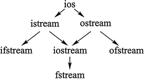

C++输入流和输出流（超级详细）
- 使用 scanf()、gets() 等函数从键盘读取数据，使用 printf()、puts() 等函数向屏幕上输出数据；
- 使用 fscanf()、fgets() 等函数读取文件中的数据，使用 fprintf()、fputs() 等函数向文件中写入数据。
要知道，C 语言的这套 I/O 解决方案也适用于 C++ 程序，但 C++ 并没有“偷懒”，它自己独立开发了一套全新的 I/O 解决方案，其中就包含大家一直使用的 cin 和 cout。前面章节中，我们一直在用 cin 接收从键盘输入的数据，用 cout 向屏幕上输出数据（这 2 个过程又统称为“标准 I/O”）。除此之外，C++ 也对从文件中读取数据和向文件中写入数据做了支持（统称为“文件 I/O”）。
本质上来说，C++ 的这套 I/O 解决方案就是一个包含很多类的类库（作为 C++ 标准库的组成部分），这些类常被称为“流类”。
图 1 展示了 C++ 中用于实现数据输入和输出的这些流类以及它们之间的关系：C++ 的开发者认为数据输入和输出的过程也是数据传输的过程，数据像水一样从一个地方流动到另一个地方，所以 C++ 中将此过程称为“流”，实现此过程的类称为“流类”。

图 1 C++类库中的流类
图 1 中这些流类各自的功能分别为：其中，图中的箭头代表各个类之间的派生关系。比如，ios 是所有流类的基类，它派生出 istream 和 ostream。特别需要指出的是，为了避免多继承的二义性，从 ios 派生出 istream 和 ostream 时，均使用了 virtual 关键字（虚继承）。
- istream：常用于接收从键盘输入的数据；
- ostream：常用于将数据输出到屏幕上；
- ifstream：用于读取文件中的数据；
- ofstream：用于向文件中写入数据；
- iostream：继承自 istream 和 ostream 类，因为该类的功能兼两者于一身，既能用于输入，也能用于输出；
- fstream：兼 ifstream 和 ofstream 类功能于一身，既能读取文件中的数据，又能向文件中写入数据。
本章仅讲解实现标准 I/O 操作的 istream、ostream 和 iostream 类，有关实现文件 I/O 操作的流类放到后续章节讲解。
C++输入流和输出流
在前面章节的学习中，只要涉及输入或者输出数据，我们立马想到的就是 cin 和 cout。其实，cin 就是 istream 类的对象，cout 是 ostream 类的对象，它们都声明在 <iostream> 头文件中，这也解释了“为什么在 C++ 程序中引入 <iostream> 就可以使用 cin 和 cout”（当然使用 cin 和 cout，还需要声明 std 命名空间）。除此之外，<iostream> 头文件中还声明有 2 个 ostream 类对象，分别为 cerr 和 clog。它们的用法和 cout 完全一样，但 cerr 常用来输出警告和错误信息给程序的使用者，clog 常用来输出程序执行过程中的日志信息（此部分信息只有程序开发者看得到，不需要对普通用户公开）。
cout、cerr 和 clog 之间的区别如下：
- cout 除了可以将数据输出到屏幕上，通过重定向（后续会讲），还可以实现将数据输出到指定文件中；而 cerr 和 clog 都不支持重定向，它们只能将数据输出到屏幕上；
- cout 和 clog 都设有缓冲区，即它们在输出数据时，会先将要数据放到缓冲区，等缓冲区满或者手动换行（使用换行符 '\n' 或者 endl）时，才会将数据全部显示到屏幕上；而 cerr 则不设缓冲区，它会直接将数据输出到屏幕上。
除了以上 2 点特性上的不同之外，cerr、clog 和 cout 没有任何不同。之所以我们常用 cout，是因为 cerr 和 clog 有各自不同的适用场景。以 cerr 为例，一旦程序某处使用 cerr 输出数据，我们自然而然地会认为此处输出的是警告或者错误信息。
如下程序演示了 cin、cout、cerr 和 clog 的基本用法：值得一提的是，类似 cin、cout、cerr 和 clog 这样，它们都是 C++ 标准库的开发者创建好的，可以直接拿来使用，这种在 C++ 中提前创建好的对象称为内置对象。实际上，<iostream> 头文件中还声明有处理宽字符的 4 个内置对象，分别为 wcin、wcout、wcerr 以及 wclog，由于不是本节重点，这里不再对它们做详细讲解。
#include <iostream>
#include <string>
int main() {
std::string url;
std::cin >> url;
std::cout << "cout：" << url << std::endl;
std::cerr << "cerr：" << url << std::endl;
std::clog << "clog：" << url << std::endl;
return 0;
}
程序执行结果为：
http://c.biancheng.net
cout：http://c.biancheng.net
cerr：http://c.biancheng.net
clog：http://c.biancheng.net
它们的用法远不止此，istream 和 ostream 类提供了很多实用的函数，cin、cout、cerr 和 clog 作为类对象，当然也能调用。注意，此程序中并没有考虑 cerr 和 clog 各自特有的含义，这里仅是为了演示 cerr 和 clog 的基础用法，不建议读者这样使用。另外，如果程序中 std 命名空间提前声明，则所有的 std:: 可以省略。
表 1 罗列了 cin 对象常用的一些成员方法以及它们的功能：
| 成员方法名 | 功能 |
|---|---|
| getline(str,n,ch) | 从输入流中接收 n-1 个字符给 str 变量，当遇到指定 ch 字符时会停止读取，默认情况下 ch 为 '\0'。 |
| get() | 从输入流中读取一个字符，同时该字符会从输入流中消失。 |
| gcount() | 返回上次从输入流提取出的字符个数，该函数常和 get()、getline()、ignore()、peek()、read()、readsome()、putback() 和 unget() 联用。 |
| peek() | 返回输入流中的第一个字符，但并不是提取该字符。 |
| putback(c) | 将字符 c 置入输入流（缓冲区）。 |
| ignore(n,ch) | 从输入流中逐个提取字符，但提取出的字符被忽略，不被使用，直至提取出 n 个字符，或者当前读取的字符为 ch。 |
| operator>> | 重载 >> 运算符，用于读取指定类型的数据，并返回输入流对象本身。 |
表 2 罗列了 cout、cerr 和 clog 对象常用的一些成员方法以及它们的功能：
| 成员方法名 | 功能 |
|---|---|
| put() | 输出单个字符。 |
| write() | 输出指定的字符串。 |
| tellp() | 用于获取当前输出流指针的位置。 |
| seekp() | 设置输出流指针的位置。 |
| flush() | 刷新输出流缓冲区。 |
| operator<< | 重载 << 运算符，使其用于输出其后指定类型的数据。 |
#include <iostream>
using namespace std;
int main() {
char url[30] = {0};
//读取一行字符串
cin.getline(url, 30);
//输出上一条语句读取字符串的个数
cout << "读取了 "<<cin.gcount()<<" 个字符" << endl;
//输出 url 数组存储的字符串
cout.write(url, 30);
return 0;
}
程序执行结果为：
http://c.biancheng.net
读取了 23 个字符
http://c.biancheng.net
注意，表 1 和表 2 中仅罗列了 istream 和 ostream 类中常用的一些成员方法，关于这些方法的具体用法，后续章节会做详细介绍。
关注公众号「站长严长生」，在手机上阅读所有教程，随时随地都能学习。内含一款搜索神器，免费下载全网书籍和视频。

微信扫码关注公众号